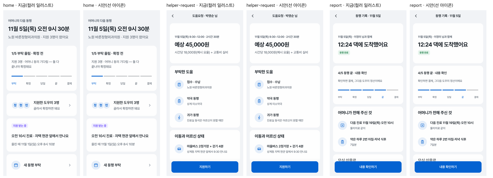
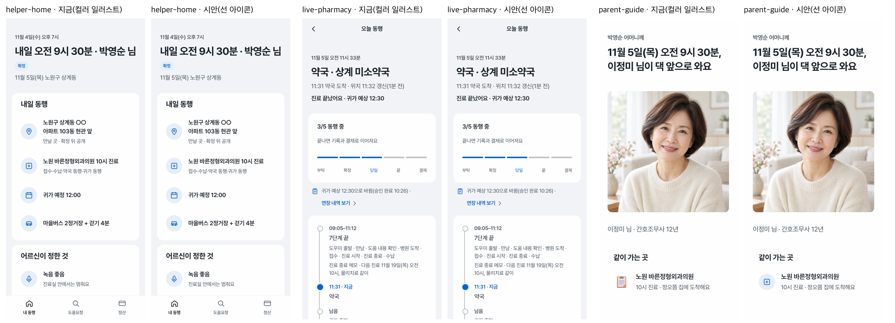
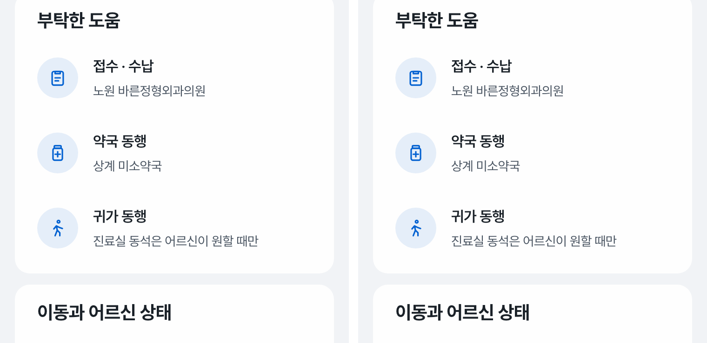

아이콘 시안 — 컬러 일러스트 vs 선 아이콘
대표 화면 6장을 같은 내용으로 두 번 찍었어요. 왼쪽이 지금(Fluent 컬러 일러스트), 오른쪽이 시안(선 아이콘 + 브랜드 연한 원). 기존 51장과 파운데이션은 바꾸지 않았어요.
좋아지는 점
- 뜻이 정확해져요 — 녹음은 마이크, 진료는 병원 십자, 보청기는 귀. 지금은 녹음 자리에 계산기처럼 보이는 그림, 진료 자리에 클립보드가 들어가 있어요.
- 의료·신뢰 서비스의 차분한 톤과 맞아요. 화면마다 색이 튀는 점이 줄어 숫자·시각이 먼저 읽혀요.
- 사진(도우미 얼굴)과 그림 질감이 부딪히지 않아요.
잃는 점
- 따뜻함이 줄어요. 특히 어머니 안내(parent-guide)는 컬러 그림이 더 친근하고 알아보기 쉬워요.
- 작은 선 아이콘은 서로 비슷해 보일 수 있어요 — 약 아이콘이 처음엔 링크 기호처럼 보여 한 번 고쳤어요.
- 하네스 원칙 10번(사물 = 컬러 일러스트)을 바꿔야 하고, 51장 전체에 적용해야 일관돼요.
추천
보호자·도우미 화면은 선 아이콘, 어머니가 보는 문자 링크 화면(parent-consent·parent-guide)만 컬러 일러스트 유지. 어머니 화면은 앱 밖 한 장짜리라 톤이 달라도 섞여 보이지 않고, 큰 글자와 함께 알아보기 쉬운 쪽이 우선이에요.
보호자 홈 · 도움요청 상세 · 동행 기록

도우미 홈 · 오늘 동행(약국) · 어머니 안내

확대 — 도움요청의 '부탁한 도움'

시안 화면은 out/screens-line/ 에서 직접 열어 볼 수 있어요(링크는 기존 화면으로 이어짐). 스타일은 out/proposals/line-icons.css 3줄입니다.